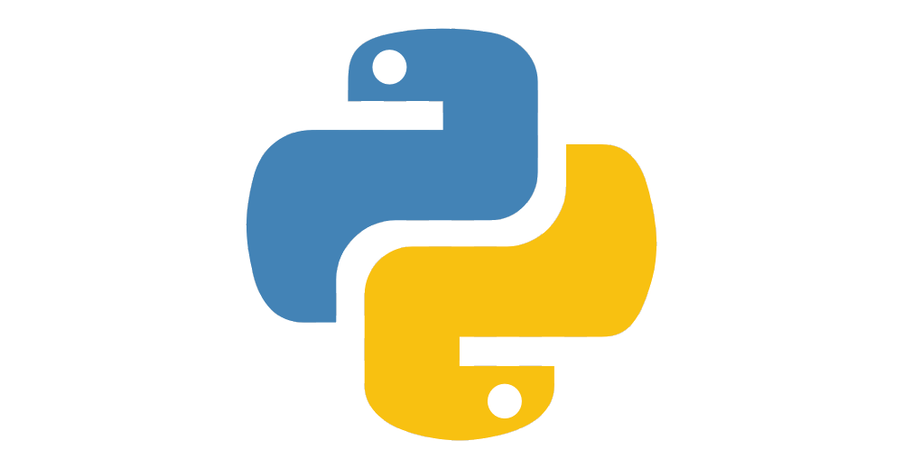

Florian Guillou
Dev Appli Logiciel
<
BUT Informatique
2021-2024
- Conception, développement et gestion de logiciels
- Développement et conception de sites web
- Gestion de bases de données
IUT Lannion 22
BAC général
2021
- Mention Européenne
- Spécialités Mathématiques et Numériques & sciences informatiques
Lycée Saint-Pierre Saint-Brieuc 22
Développement Logiciel
- Java

- C

- Python 
Développement WEB
- HTML

- CSS

Gestion de bases de données
- SQL

- UML


Site web Personnel
Acquis :
Persévérence, autonomie, capacités de recherche
Gestion de couple de parenthèses
Acquis :
Travail d'équipe, logique
Assistant magasinier et récolte de céréales
Acquis :
Dynamisme, Patience, Contact